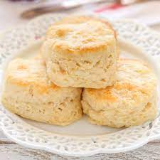

Pat Alley's Buttermilk Biscuits

True Southern Buttermilk Biscuits just like my Gran use to make.
Pat Alley's Buttermilk Biscuits when baked properly will melt in your mouth! Lots of
Butter is a must for these delecious biscuits. Add your favorite jam or honey for the
true southern experience. These Buttermilk Biscuits pair well with the
Chicken and Dressing Casserole
and the Green Bean Casserole.
Ingredients
- 2 1/2 cups self-rising flour (White Lily, unbleached
- 1/2 cup Butter
- 2/3-3/4 cup Buttermilk
*Preheat oven to 450 degrees*
*Lightly flour a pastry board or the counter to prevent sticking*
Steps
- Use a pastry blender (handheld) to "cut in" butter.
Can also use two knives for this step.
- Flour and butter should now look like small peas.
Gradually add buttermilk. If 2/3 cup buttermilk isn't enough, add up to
a total of 3/4 cup to prevent having a dry dough.
- On a floured surface, knead dough 3-4 times.
- Roll out dough to 1/2" thick. Cut out biscuits with a biscuit cutter,
mason jar lid, or top of a glass.
- Bake at 450 degrees approx. 10 minuites
Home